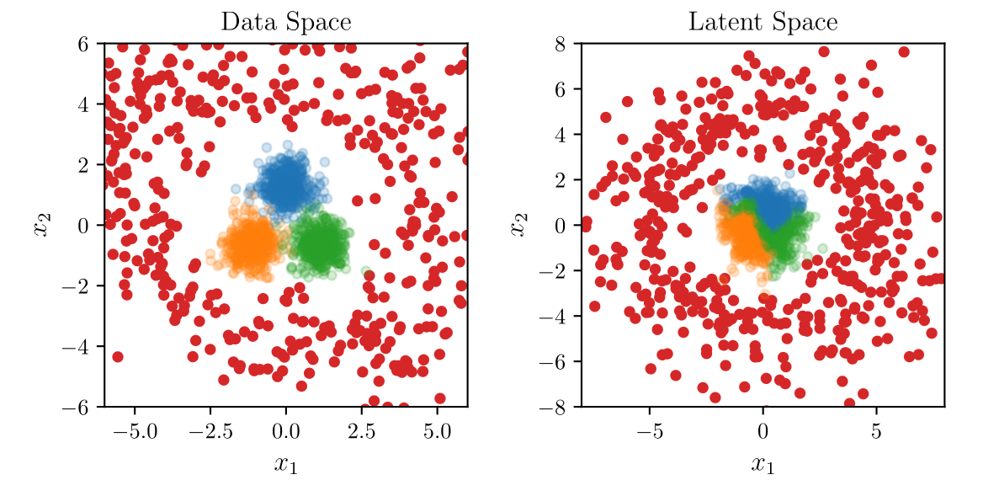

Projects
dotfiles
There's no place like ~/.
Dotfiles for my terminal-based workflow.
pytorch-revnet
Implementation of the reversible residual network in PyTorch.
Publications
Understanding Silent Failures in Medical Image Classification
To ensure the reliable use of classification systems in medical applications, it is crucial to
prevent silent failures. This can be achieved by either designing classifiers that are robust
enough to avoid failures in the first place, or by detecting remaining failures using confidence
scoring functions (CSFs). A predominant source of failures in image classification is
distribution shifts between training data and deployment data. To understand the current state
of silent failure prevention in medical imaging, we conduct the first comprehensive analysis
comparing various CSFs in four biomedical tasks and a diverse range of distribution shifts.
Based on the result that none of the benchmarked CSFs can reliably prevent silent failures, we
conclude that a deeper understanding of the root causes of failures in the data is required. To
facilitate this, we introduce SF-Visuals, an interactive analysis tool that uses latent space
clustering to visualize shifts and failures. On the basis of various examples, we demonstrate
how this tool can help researchers gain insight into the requirements for safe application of
classification systems in the medical domain. The open-source benchmark and tool are at:
https://github.com/IML-DKFZ/sf-visuals.
A call to reflect on evaluation practices for failure detection in image classification
Reliable application of machine learning-based decision systems in the wild is one of the major
challenges currently investigated by the field. A large portion of established approaches aims
to detect erroneous predictions by means of assigning confidence scores. This confidence may be
obtained by either quantifying the model's predictive uncertainty, learning explicit scoring
functions, or assessing whether the input is in line with the training distribution. Curiously,
while these approaches all state to address the same eventual goal of detecting failures of a
classifier upon real-life application, they currently constitute largely separated research
fields with individual evaluation protocols, which either exclude a substantial part of relevant
methods or ignore large parts of relevant failure sources. In this work, we systematically
reveal current pitfalls caused by these inconsistencies and derive requirements for a holistic
and realistic evaluation of failure detection. To demonstrate the relevance of this unified
perspective, we present a large-scale empirical study for the first time enabling benchmarking
confidence scoring functions w.r.t all relevant methods and failure sources. The revelation of a
simple softmax response baseline as the overall best performing method underlines the drastic
shortcomings of current evaluation in the abundance of publicized research on confidence
scoring. Code and trained models are at https://github.com/IML-DKFZ/fd-shifts.
An Exploration of Normalizing Flows for Outlier Generation

Outliers are an important topic in statistics and machine
learning. They can be hard to identify and what constitutes an
outlier might even be subjective. In recent years, work has been
done to use different generative models for outliers. This can
not only allow one to investigate what potential outliers might
look like directly, it can also be used to improve
classification models, as particularly deep neural network
classifiers using rectified linear units as activations have
been shown to yield high-confidence predictions even far away
from the training data. We propose using a normalizing flow to
model the probability density of the training data and generate
outliers by sampling from an outlier distribution in latent
space. We improve interpretability and control over the
generated samples by applying archetypal analysis to the latent
space of the normalizing flow. We show how this leads to
outliers with varying similarity to the inlier data. These
outliers can also be used for subsequent tasks such as training
confidence-calibrated classifiers.